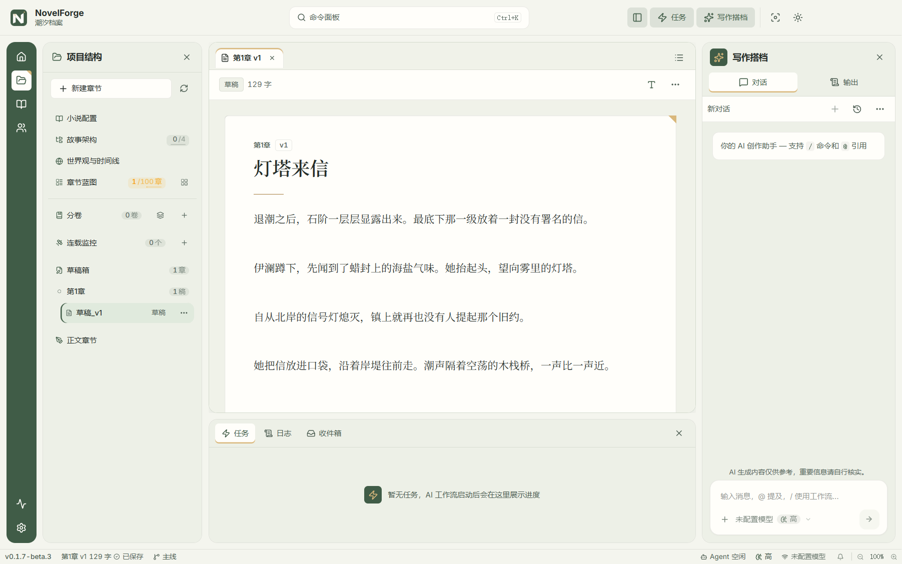

理清故事结构
把角色档案、世界观、时间线和章节大纲放在同一个项目里。写到下一章时，就近查阅前文和设定。
开源 AI 小说创作软件
用一个桌面工作台梳理世界观、人物和情节，写下每一章，再让 AI 写作搭档参考已有设定和前文，协助构思与修订。

把角色档案、世界观、时间线和章节大纲放在同一个项目里。写到下一章时，就近查阅前文和设定。
在稿纸编辑器里撰写章节、保留多个草稿。可以请 AI 写作搭档完善大纲、改写选中的段落，或者审阅章节。
稿件、设定和检索索引保存在本机。你可以接入本地模型或云端模型服务，使用云端模型时，请求及所选上下文会发给对应服务。
跟着应用实录创建项目、整理设定，再练习编辑和阅读章节。
选择 Windows 安装版或免安装便携版。通过 Gitee 下载时，请将所选版本的三个分卷放在同一目录，再用 7-Zip 打开 .001 分卷解压。